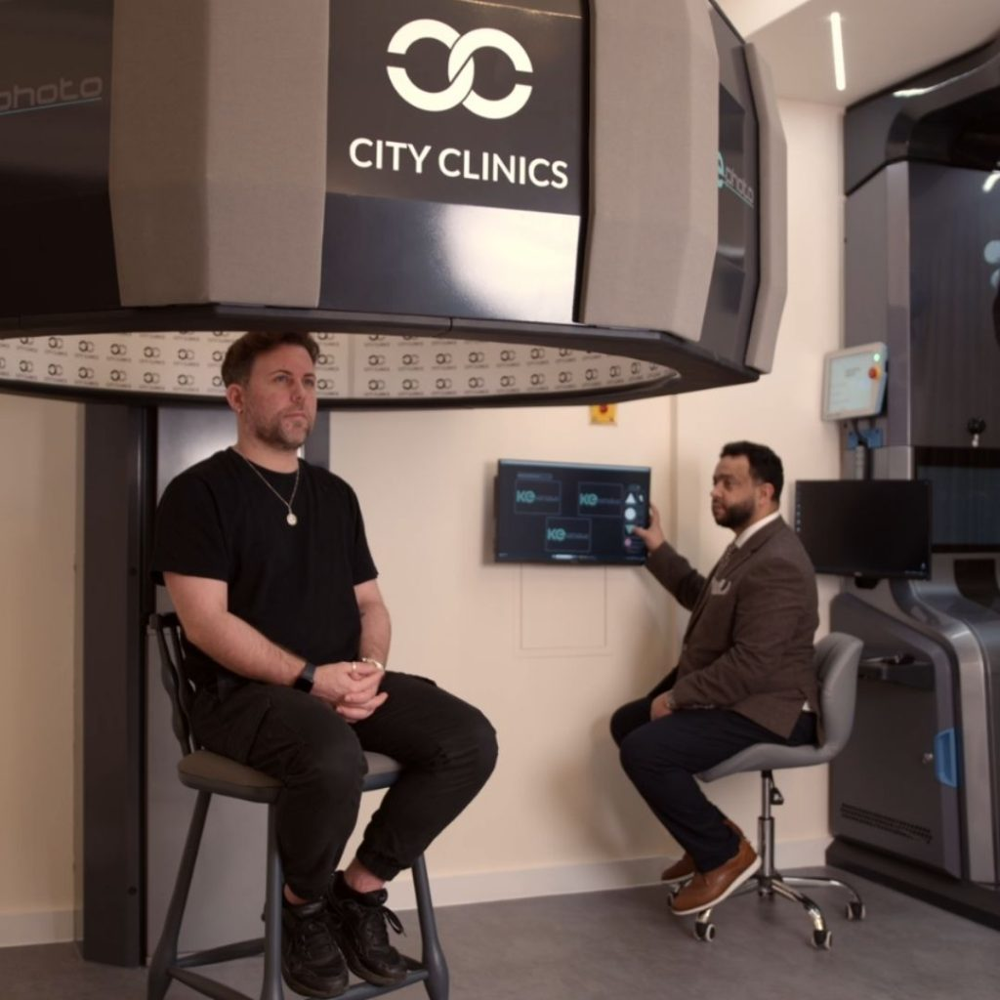
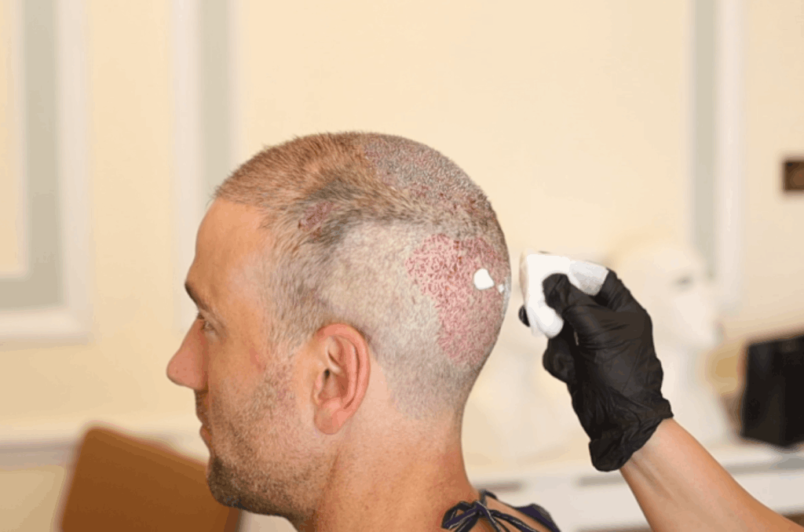

Official Hair Clinic - The Science Behind Hair Loss
Understand why hair loss happens and how expert treatment supports healthy regrowth.
Understand why hair loss happens and how expert treatment supports healthy regrowth.
Hair loss is often a sign of an underlying issue and stress is a common but sometimes overlooked cause. At Official Hair Clinic, we help identify stress-related hair loss including telogen effluvium and provide personalised treatments to restore healthy hair growth.
Contact us to begin your hair restoration journey today.
Contact UsStress can disrupt the natural hair growth cycle, causing noticeable shedding. Understanding this connection can help you manage and restore healthy hair growth.
Contact UsTelogen effluvium is the most common form of stress-induced hair loss. It occurs when physical or emotional stress causes hair follicles to enter the resting phase, resulting in noticeable hair shedding. This type of hair loss is usually temporary, and hair regrowth is possible with the right approach.
Stress elevates cortisol levels, which can disrupt the balance of other hormones. This hormonal imbalance may lead to thinning hair and hinder healthy regrowth. Addressing stress and hormonal issues is key to restoring hair health.
At Official Hair Clinic, your hair transplant journey is guided by experienced medical professionals every step of the way. From your first consultation to your final results, you are in the care of GMC-registered doctors and qualified nurses specialising in advanced FUE hair restoration techniques.
Process of Male Pattern Baldness
Hair begins to retreat around the frontal hairline and temple zones, often forming a sharper angle or a pronounced V shape.
Hair density decreases in the crown or vertex area. This can occur in isolation or alongside frontal recession.
Hair may shed in isolated spots that follow a recognisable pattern, gradually merging as the condition progresses.
Significant thinning is visible across the top of the scalp, including the crown, with sparse strands and less coverage.
Most hair across the top is absent, typically leaving a horseshoe-shaped band around the sides and back.
Hair is fully absent from the crown and upper scalp, and the remaining fringe can also appear thin.
Do not let stress take control of your life or your hairline. At Official Hair Clinic, we offer personalised solutions for stress-induced hair loss, including advanced FUE hair transplants and professional stress management support.
Book your consultation today and take the first step toward stronger, healthier hair and a more confident you.
Contact Us
It is a condition where stress causes a significant number of hair follicles to enter the resting phase at once, leading to diffuse hair shedding.
In most cases, stress-related hair loss is temporary. However, stress can sometimes trigger conditions like alopecia areata, an autoimmune disorder where the immune system attacks hair follicles.
While there is no cure, some treatments aim to modulate the immune response and promote hair regrowth.
If your hair loss began after a stressful event and involves noticeable shedding, stress may be the cause. A consultation at Official Hair Clinic can confirm this and guide your treatment.
We offer FUE hair transplants, scalp care solutions, and stress management strategies to address both the cause and the symptoms of hair loss.
You can expect to see initial hair regrowth within 3 to 4 months, with full results typically visible between 9 and 12 months.
Start communicate with us

Info:
Basecamp
Our hair transplant clinic operates from prestigious locations on Harley Street, London, and in Sheffield, providing patients across the UK with access to world-class hair restoration surgery.